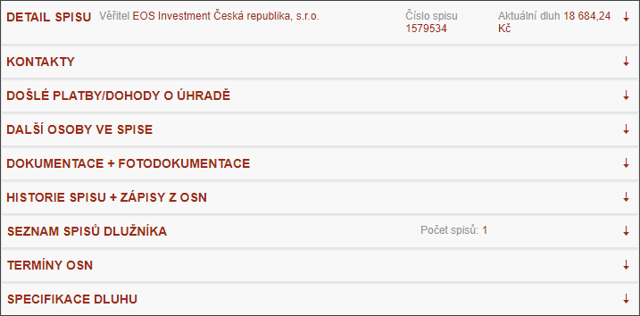
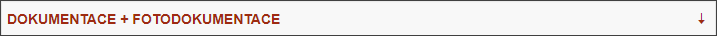
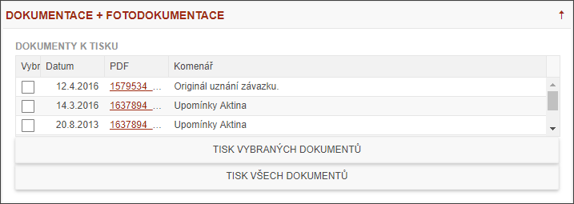

Ovládání Podzáložek
Aplikace má celkem devět podzáložek, kde každá dle nadpisu obsahuje detaily konkrétního spisu. Každá podzáložka má hlavičku a tělo.

Kliknutím na hlavičku (nebo na šipku v pravé části hlavičky) se podzáložka otevře, opakovaným kliknutím zase zavře.


Uživatel může měnit pozici (pořadí) jednotlivých podzáložek tím, chytne hlavičku podzáložky a přetáhne jí myší na jinou pozici.
Pokud si uživatel podzáložky přesune a zavře či otevře podle svých představ, může si toto nastavení uložit volbou v Technickém menu / Uložit vlastní nastavení. Tím pro další práci zůstanou zafixované podzáložky ve stavu otevření či v jiném pořadí i po uzavření programu. Toto nastavení platí pouze pro danou záložku (např. K OSN). Uložení může provést v každé záložce zvlášť.